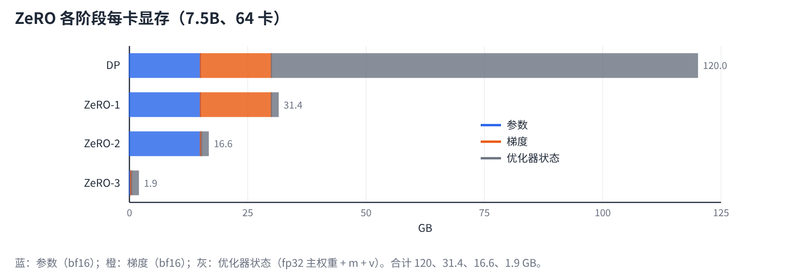
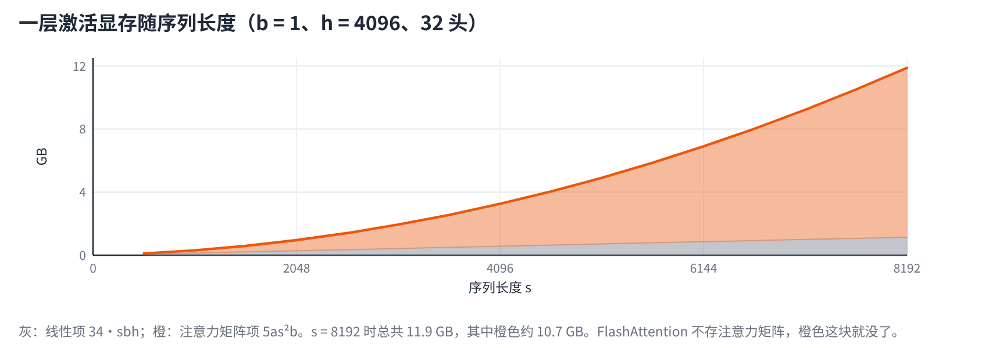
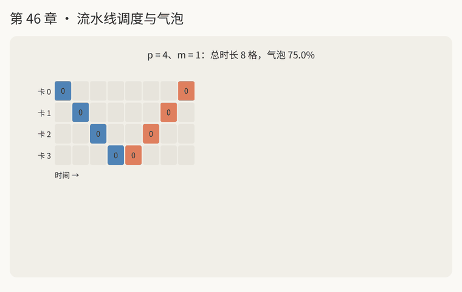

第 46 章 · 分布式训练账本：显存四项、ZeRO 分片、激活显存、all-reduce 通信量、流水线气泡
本地运行
git clone https://github.com/wikieden/math-and-eval-stats
cd math-and-eval-stats/code/notebooks
pip install jupyterlab torch numpy
jupyter lab ch46_distributed_ledger.ipynb也可以下载后直接用 VS Code 打开 .ipynb 运行。需要 GPU 的章节在 Colab 里选「代码执行程序 → 更改运行时类型 → GPU」。
本章回答：训练一个 7B 模型，显存都花在哪？为什么说“每个参数 16 字节”？ZeRO 的三个阶段各省了什么？激活显存为什么随序列长度平方涨？数据并行同步梯度要传多少数据？流水线并行的“气泡”有多大？
讲解日期：2026-11-25 · 上一章：第 45 章 MoE 的数学 · 下一章：第 47 章 推理成本模型
对应原文：ZeROmath-and-eval-stats/materials/text/papers/zero-1910.02054.txt（混合精度 Adam 2Ψ + 2Ψ + KΨ = 16Ψ，K = 12，L311；7.5B、64 卡的例子 L108、L433）；Ultra-Scale Playbookdistributed-pretraining/materials/papers/ultrascale-playbook.pdf（DP / TP / PP 通信量与气泡）；激活显存公式取自 Korthikanti 2022《Reducing Activation Recomputation in Large Transformer Models》式 (2)（本地未归档）
本章缩写：Ψ = 参数个数；DP = Data Parallelism（数据并行）；TP = Tensor Parallelism（张量并行）；PP = Pipeline Parallelism（流水线并行）；ZeRO = Zero Redundancy Optimizer（零冗余优化器）；N_d = 数据并行的卡数；s、b、h、a = 序列长度、micro-batch 大小、隐藏维度、头数；m = 微批数；p = 流水线级数。全部缩写见 附录 · 缩写与术语表
讲解
第一步：模型状态：每个参数 16 字节（2026-11-25）
类比：一本书要存三份：一份给人读的平装本（bf16 参数），一份修改记录（梯度），一份带详细批注的精装母本（fp32 主权重 + Adam 的 m、v）。
混合精度 Adam（ZeRO L311）：
| 项 | 精度 | 字节 / 参数 |
|---|---|---|
| 参数 | bf16 / fp16 | 2 |
| 梯度 | bf16 / fp16 | 2 |
| fp32 主权重 | fp32 | 4 |
| Adam 一阶矩 m | fp32 | 4 |
| Adam 二阶矩 v | fp32 | 4 |
| 合计 | 16 |
例子：7.5B 参数 → 120 GB，还没算激活。一张 80 GB 的卡连模型状态都放不下，必须分片。
一句话：混合精度 Adam 每个参数 16 字节（2 参数 + 2 梯度 + 12 优化器状态），优化器状态占大头。
第二步：ZeRO：把冗余的副本切开（2026-11-25）
数据并行时每张卡都存一整份模型状态，N_d 张卡就有 N_d 份完全相同的副本。ZeRO 把它们切成 N_d 份，每张卡只存自己那份：
| 阶段 | 切分 | 每卡 | 7.5B、64 卡 |
|---|---|---|---|
| DP | 不切 | 16Ψ | 120.0 GB |
| ZeRO-1 | 优化器状态 | 4Ψ + 12Ψ/N_d | 31.4 GB |
| ZeRO-2 | + 梯度 | 2Ψ + 14Ψ/N_d | 16.6 GB |
| ZeRO-3（FSDP） | + 参数 | 16Ψ/N_d | 1.9 GB |
（数字和 ZeRO 论文 L108、L433 一致）ZeRO-1、2 的通信量和普通数据并行一样（all-reduce 拆成 reduce-scatter + all-gather）；ZeRO-3 每层前向、反向都要先 all-gather 参数，通信量约为 1.5 倍。

图 46-1 · 7.5B 模型、64 卡：参数（蓝）、梯度（橙）、优化器状态（灰）在四种做法下每卡占的显存一句话：ZeRO-1/2/3 依次切开优化器状态、梯度、参数；ZeRO-3 每卡只剩 16Ψ/N_d，代价是多一些参数通信。
第三步：激活显存：随序列长度平方增长的那一项（2026-11-25）
反向传播要用到前向的中间结果。一层 Transformer（不重算、不做序列并行）的激活约
前一项是线性层、LayerNorm、dropout 等，随 s 线性；后一项是注意力的分数和概率矩阵（a 个头 × s × s），随 s 平方。张量并行 t 路时大部分除以 t：s·b·h·(10 + 24/t + 5as/(ht))。
例子（b = 1、h = 4096、32 个头，一层）：
| s | 不切 | TP = 8 |
|---|---|---|
| 2048 | 0.96 GB | 0.19 GB |
| 8192 | 11.88 GB | 1.78 GB |

图 46-2 · 横轴序列长度，纵轴一层激活（GB）；灰色是线性项 34·sbh，橙色是注意力矩阵项 5as²b，长序列时橙色占绝大部分序列长 4 倍，激活涨 12 倍：注意力矩阵那一项占了大头。FlashAttention 不存注意力矩阵（第 48 章），这一项就没了；再加上选择性重算，长序列才放得下。
一句话：一层激活 ≈ sbh(34 + 5as/h) 字节，注意力矩阵那项随 s² 涨；FlashAttention、重算、张量 / 序列并行都是在砍它。
第四步：通信：ring all-reduce（2026-11-25）
数据并行每步要把所有卡的梯度求和（all-reduce）。ring 算法：先 reduce-scatter 再 all-gather，每张卡发送
几乎和卡数无关（N 大时趋于 2M）。
例子（7B 模型、bf16 梯度 14 GB）：
| 卡数 | 2 | 8 | 64 |
|---|---|---|---|
| 每卡发送 | 14.0 GB | 24.5 GB | 27.6 GB |
每卡 400 GB/s 的 NVLink 上约 0.07 秒；跨节点 50 GB/s 的网卡上约 0.55 秒：所以要和反向计算重叠（DDP 的 bucket）。张量并行每层前向、反向各要 2 次 all-reduce（激活大小），只能放在 NVLink 范围内。
一句话：ring all-reduce 每卡发送约 2M，几乎不随卡数增长；关键是带宽和能不能和计算重叠。
第五步：流水线气泡（2026-11-25）
类比：工厂流水线刚开工时，后面的工位要等前面的半成品，最后收工时前面的工位先闲下来。
p 级流水线、一个 batch 切成 m 个微批（GPipe / 1F1B）：
例子：
| p | m | 气泡 |
|---|---|---|
| 4 | 4 | 42.9% |
| 4 | 16 | 15.8% |
| 8 | 64 | 9.9% |
微批越多气泡越小，但每个微批变小会降低矩阵乘效率、1F1B 的激活显存也和 p 有关；交错流水线（每卡多个虚拟级）、零气泡调度（拆开反向的两部分）进一步压缩气泡。
场景代码：PyTorch FSDP2 就是 ZeRO-3（真实 API；本书环境没装 torch，没跑过）：
from torch.distributed.fsdp import fully_shard
for block in model.layers:
fully_shard(block) # 每个 block 的参数、梯度、优化器状态按卡切分，用到时 all-gather
fully_shard(model)
一句话：流水线气泡 = (p − 1)/(m + p − 1)，靠多切微批、交错和零气泡调度压下来。
动画演示：流水线调度与气泡

可交互版：animations/46-distributed-ledger.html（滑块调流水线级数 p 和微批数 m）。
怎么看：
- 每一行是一个流水线级（一张卡），横轴是时间；蓝色格子是前向、橙色是反向，灰色是空闲（气泡）（第五步）；
- 右上角是气泡比例 (p − 1)/(m + p − 1)；m 调大，灰色占比变小；p 调大，开头结尾的阶梯变长。
练习与作答记录
题 1（第一、二步）：70B 参数的模型，混合精度 Adam，模型状态一共多少 GB？用 ZeRO-3 切到 256 张卡，每卡多少 GB？
作答：（待作答）
题 2（第三步）：s = 4096、b = 2、h = 8192、64 个头，一层的激活显存是多少 GB（不切）？注意力矩阵那一项占多少比例？
作答：（待作答）
题 3（第五步）：p = 16 级流水线，要让气泡低于 10%，至少要多少个微批？
作答：（待作答）
口诀
每个参数十六字节：二参二梯十二优化器；
ZeRO 一二三，依次切优化器、梯度、参数；
激活 sbh 乘 (34 + 5as/h)，长序列靠 Flash 和重算；
ring all-reduce 每卡约 2M；
气泡 (p−1)/(m+p−1)，微批多才小。
本章复习卡片
ST151（混合精度 Adam 的 16 字节与 ZeRO 三阶段）、ST152（激活显存公式与 s² 项）、ST153（ring all-reduce 通信量与流水线气泡）。练习做完后，按答错、卡住的地方补上。
附录 · 延伸阅读
留给以后深入学习用，不影响本章主线。★ 是建议先读的。
推荐阅读
| 读什么 | 读哪里 | 读它为了什么 |
|---|---|---|
| ★ ZeRO（Rajbhandari 2020） | §3（L311）、§5（L433 起） | 模型状态的构成与三阶段分片 |
| ★ Ultra-Scale Playbook（Hugging Face） | DP、ZeRO、TP、PP 各章 | 通信量公式、气泡、实际配置 |
| Korthikanti 2022（本地未归档） | §4（式 (2)） | 激活显存公式、选择性重算 |
| 《从约束推导 AI Infra》第 32 章 DP / TP / SP、第 57 章 状态分片、第 58 章 流水线重叠 | 全章 | 系统视角 |
| 《PyTorch 从里到外》第 19 章 FSDP2 | 全章 | ZeRO-3 的 PyTorch 实现 |
数学原理
- 16Ψ：2（bf16 参数）+ 2（bf16 梯度）+ 4（fp32 主权重）+ 4（m）+ 4（v）。
- ring all-reduce：N − 1 轮 reduce-scatter、N − 1 轮 all-gather，每轮发 M/N，共 2(N − 1)M/N，带宽最优。
- 气泡：前 p − 1 个时间片后面的级在等、最后 p − 1 个时间片前面的级在等；总时间 m + p − 1 个时间片里只有 m 个是满的。
- 激活的 s² 项：注意力分数 QKᵀ 和 softmax 输出各 a·s²·b 个元素（2 字节），加上 dropout mask（1 字节），合计 5as²b。
公式清单
| 公式 | 意思 |
|---|---|
| 16Ψ 字节 | 混合精度 Adam 的模型状态 |
| 4Ψ + 12Ψ/N_d、2Ψ + 14Ψ/N_d、16Ψ/N_d | ZeRO-1/2/3 每卡 |
| \(sbh(34 + 5as/h)\) | 一层激活 |
| \(2(N - 1)M/N\) | ring all-reduce 每卡发送量 |
| \((p - 1)/(m + p - 1)\) | 流水线气泡 |
代码对照：把本章的数字用代码算一遍
代码在仓库本地
math-and-eval-stats/solutions/chapter-code/ch46_distributed_ledger.py，配套测试tests/test_ch46.py：
bash cd math-and-eval-stats/solutions/chapter-code uv run python ch46_distributed_ledger.py uv run pytest tests/test_ch46.py
讲义 ↔ 代码：
| 讲义 | 公式 | 写法 | 跑出来 |
|---|---|---|---|
| 第一步 16 字节 | 16Ψ | model_states(7.5e9, 1, 0) |
120 GB |
| 第二步 ZeRO | 三阶段 | model_states(7.5e9, 64, st) |
31.4、16.6、1.9 GB |
| 第三步 激活 | sbh(34 + 5as/h) | activation_bytes(8192, 1, 4096, 32) |
11.88 GB |
| 第四步 all-reduce | 2(N−1)M/N | ring_allreduce_bytes(14e9, 64) |
27.56 GB |
| 第五步 气泡 | (p−1)/(m+p−1) | bubble(4, 16) |
15.8% |
关键几行：
p, g, o = 2 * psi, 2 * psi, 12 * psi # 参数、梯度、优化器状态
return s * b * h * (34 + 5 * a * s / h) # 一层激活
return (p - 1) / (m + p - 1) # 流水线气泡
代码里才看得到的 3 件事：
- GB 用的是 10⁹：为了和 ZeRO 论文的数字对上；显存条通常按 GiB（2³⁰）标，差 7%。
- 激活公式不含 embedding 和输出层：只是一层 Transformer block；完整模型要乘层数再加上首尾两层。
- 没有做成计算器：把参数、ZeRO 阶段、TP / PP 组合起来算每卡显存和通信量，并和 Playbook 的表对数，留给自己做（里程碑 ME-M28）。
自己改一改（不影响练习答案）：
- 如果优化器换成 Lion（没有二阶矩 v），每个参数是多少字节？ZeRO-1 在 64 卡上每卡多少？
- 把
activation_bytes里注意力那一项去掉（相当于用了 FlashAttention），s = 8192 时还剩多少？